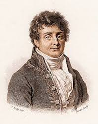

I spent 3 years as a mathematics teacher at inner London schools and sixth form colleges. Looking to change career and put my minimal coding experience to good use!
See for yourself!
Dirac Equationi\gamma^{\mu}\partial_{\mu}\Psi = m\Psi In particle physics, the Dirac equation is a relativistic wave equation derived by British physicist Paul Dirac in 1928. In its free form, or including electromagnetic interactions, it describes all spin-half massive particles such as electrons and quarks for which parity is a symmetry. |
|
|  |
Fourier Transform\tilde{f}(k) = \int_{-\infty}^{\infty}e^{-2\pi ikx}f(x)\,\textrm{d}x The Fourier transform (FT) decomposes a function of time (a signal) into the frequencies that make it up, in a way similar to how a musical chord can be expressed as the frequencies (or pitches) of its constituent notes. |
Euler's Identitye^{i\pi}-1=0 Euler's identity is named after the Swiss mathematician Leonhard Euler. It is considered to be an example of mathematical beauty, perhaps a supreme example as it shows a profound connection between the most fundamental numbers in mathematics. |
This page has been coded during the FullStack program @LeWagon. This is where I realised Ben could not play beer pong.